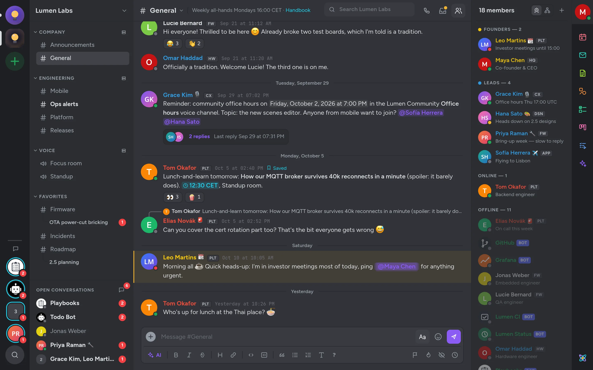

Utilització d'Antimatter
Aquesta guia és per a tothom que xateja en un servidor d'Antimatter, ja sigui al treball o en una comunitat. No cal coneixements tècnics. Comença aquí per iniciar la sessió i aprendre a moure't.
Què hi ha en aquesta guia
Antimatter és un lloc per parlar amb el teu equip o comunitat: en canals, en converses privades, en trucades i amb aplicacions com notes compartides i pissarres. Les pàgines d'aquesta guia expliquen com fer cada cosa, pas a pas:
- Escriure missatges: format, mencions, emoji, respostes i fils, edició, esborranys, programació i més.
- Comunitats i canals: com unir-s'hi, com organitzar la barra lateral, missatges directes i de grup.
- Trucades i canals de veu
- Les aplicacions: notes, pissarres, taulers kanban, calendari, correu, enquestes, tasques pendents i altres.
- Agents d'IA: resums, reescriptura i preguntes, si el teu servidor els té.
- Notificacions i estat: què arriba fins a tu i quan.
- Perfil i privacitat: el teu perfil, qui et pot enviar missatges, bloqueig i la seguretat del teu compte.
- Cerca i trobar coses: cerca, mencions, missatges desats i missatges no llegits.
- Configuració i dreceres: temes, idioma i dreceres de teclat.
Cada servidor d'Antimatter és gestionat pels seus propis administradors, que decideixen quines funcions i aplicacions estan activades. Si alguna cosa d'aquesta guia no apareix per a tu, probablement no està habilitada al teu servidor: pregunta al teu administrador.
Iniciar la sessió
Antimatter no té un lloc web central on iniciar la sessió: cada organització o comunitat gestiona el seu propi servidor, amb la seva pròpia adreça, com ara chat.example.com. El teu administrador, o la persona que t'ha convidat, et donarà aquesta adreça.
- Obre l'adreça al teu navegador web o afegeix-la a l'aplicació d'escriptori o mòbil (vegeu Les aplicacions d'escriptori i mòbil).
- A Inicia sessió al teu compte, escriu la teva adreça de correu electrònic o el teu nom d'usuari i la teva contrasenya, i després fes clic a Inicia sessió. Si la teva organització utilitza el seu propi sistema d'inici de sessió, fes clic al seu botó, sota «o inicia sessió amb».
- Si has activat l'autenticació multifactor, escriu el codi de la teva aplicació d'autenticació.
Si has rebut un enllaç d'invitació, obre'l per crear el teu compte: omple Crea el teu compte amb la teva adreça de correu electrònic, un nom d'usuari i una contrasenya, i després fes clic a Crea el compte. Si has oblidat la teva contrasenya, fes clic a Has oblidat la teva contrasenya? i introdueix la teva adreça de correu electrònic: rebràs un enllaç per triar-ne una de nova.
Alguns equips acullen els nous arribats amb unes quantes preguntes, les respostes a les quals et concedeixen els rols i els canals adequats. Pots respondre-les o bé fer clic a Omet.
La finestra
La finestra d'Antimatter té cinc columnes, d'esquerra a dreta.

- El carril de l'equip, a l'extrem esquerre: una icona rodona per a cada equip del qual en ets membre. Un punt indica missatges no llegits, i un número compta les teves mencions. Sota les icones, Afegeix un equip (+) et permet unir-te o crear-ne un. A la part inferior, les fotos de les persones que t'han enviat nous missatges directes, i Cerca-ho tot (la lupa).
- La barra lateral: el nom de l'equip actual, que n'obre el menú, i després els seus canals, agrupats per categories. A la part inferior, Converses obertes llista els teus missatges directes recents; la bombeta de diàleg al costat (Tots els missatges directes) els mostra tots, amb les teves mencions, els fils seguits, els missatges desats, els esborranys i les notes per a tu mateix.
- La conversa: els missatges del canal o de la conversa que has obert, amb la caixa de missatges a la part inferior. La seva capçalera mostra el nom (fes-hi clic per veure la informació del canal), un text de capçalera breu, la caixa de cerca, i botons per fer una trucada, per veure les teves mencions, els missatges desats i fixats i els fitxers, i per mostrar la llista de membres.
- El panell de la dreta: els membres del canal, o, quan els obres, un fil, els resultats de la cerca, o una aplicació. Prem Esc per tancar un panell.
- El carril de les aplicacions, a la vora dreta: la teva foto a la part superior, que obre el teu estat i la configuració; les icones de les aplicacions; i a la part inferior, el menú Quant a Antimatter.
Quan estiguis en una trucada, el doc de la trucada apareix a la part inferior de la barra lateral, amb botons per silenciar, compartir la pantalla o sortir: consulta El doc de la trucada.
En una pantalla petita
En una finestra estreta o al navegador del telèfon, les barres laterals es converteixen en calaixos. Toca Obre la navegació a la part superior esquerra, o desllissa cap a la dreta, per veure les comunitats i els canals. Desllissa cap a l’esquerra per a la llista de membres i les aplicacions. Prem i mantén premut un missatge per obrir-ne el menú.
Primeres passes
- Configura el teu perfil: afegeix una imatge i comprova el teu nom, perquè la gent et reconegui. Consulta Edita el teu perfil.
- Permet les notificacions quan el navegador t’ho demani, perquè sàpigues quan algú et necessita. Consulta Notificacions.
- Uneix-te als canals que t’interessen: obre el menú de la comunitat (fes clic al nom de la comunitat) i tria Explora els canals. Consulta Troba i uneix-te a canals.
- Saluda: fes clic a un canal, escriu a la caixa de missatges de la part inferior i prem Enter.
- Escriu a algú directament: fes clic al seu nom i després a Missatge.
Per anar ràpidament a qualsevol lloc, prem Ctrl+K (⌘+K en un Mac) i escriu algunes lletres d’un canal, d’una persona o d’un missatge.
Obtenció d'ajuda
Fes clic al logotip d’Antimatter a la part inferior de la barra d’aplicacions per obrir Quant a Antimatter. Sota Ajuda:
- Guia d’usuari obre l’ajuda integrada d’Antimatter sobre missatgeria, enviaments, format, mencions, fitxers i comandes.
- Dreceres de teclat llista totes les dreceres.
- Ajuda amb el format explica com formatejar els missatges.
- Informa d’un problema, quan el teu administrador l’ha configurat, els informa d’un problema.
El mateix menú llista els Productes que s’obren com a pàgines completes, com ara Kanban i Playbooks. El botó ? a la barra de format de la caixa de missatges també obre l’ajuda. Per a qualsevol cosa sobre el teu compte o el teu servidor, pregunta al teu administrador.
Les aplicacions per a ordinador i mòbil
Pots utilitzar Antimatter en qualsevol navegador web recent. També hi ha aplicacions per al teu ordinador i el teu telèfon.
L’aplicació per a ordinador
L'aplicació d'escriptori funciona a Windows, macOS i Linux. Mostra la mateixa finestra que el navegador i hi afegeix algunes coses: notificacions sense haver de demanar-les al navegador, una insígnia de missatges no llegits a la seva icona, els botons Enrere i Endavant a la part superior del carril de la comunitat, el seu propi selector de compartició de pantalla en les trucades i diversos servidors en una sola aplicació.
- Inicia l'aplicació. Després de les pantalles de benvinguda, fes clic a Comença.
- A Connecta al teu servidor, escriu l'URL del servidor que t'ha donat l'administrador i un Nom per mostrar del servidor a la teva elecció, i després fes clic a Connecta.
- Inicia sessió com ho farias en un navegador.
Per afegir un altre servidor, tria Afegeix un servidor al menú de servidors a la part superior de la finestra, o a la Configuració de l'aplicació, sota Servidors. La finestra de Configuració de l'aplicació (Ctrl+, a Windows i Linux, Preferències… a un Mac) també configura si s'obre en iniciar sessió, on es descarguen els fitxers, els idiomes del corrector ortogràfic i les seves notificacions.
L'aplicació mòbil
L'aplicació mòbil funciona a Android 11 o superior i iOS 18 o superior.
- Obre l'aplicació i passa per les pantalles de benvinguda.
- A Connecta al teu servidor, introdueix l'adreça del servidor a Introdueix l'URL del servidor, tria un Nom per mostrar i toca Connecta.
- Inicia sessió amb el teu correu electrònic o nom d'usuari i contrasenya, o amb el sistema d'inici de sessió de la teva organització.
L'aplicació mòbil té el seu propi disseny: les pestanyes de la part inferior porten a Inici, Cerca, Mencions, missatges Desats i el teu Compte, on configures el teu estat i trobes la configuració de l'aplicació. Inclou missatges, fils, canals, trucades i canals de veu, enquestes, GIF i adhesius. Algunes funcions de l'aplicació web encara no hi són, com ara la càmera en les trucades, l'edició de notes i pissarres, Kanban, Calendari i Correu. Les notificacions push al teu telèfon requereixen que el teu administrador les hagi configurat al servidor.